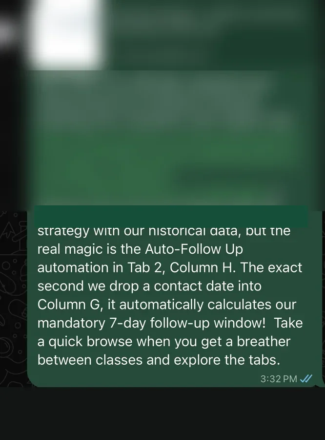
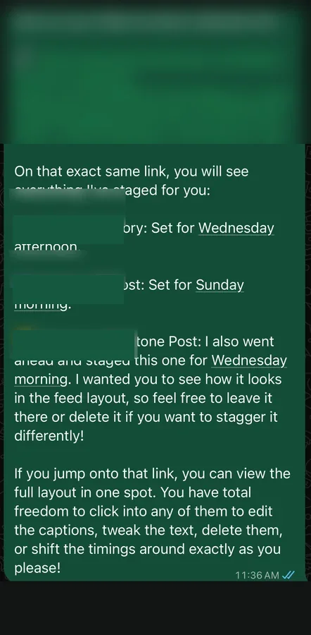
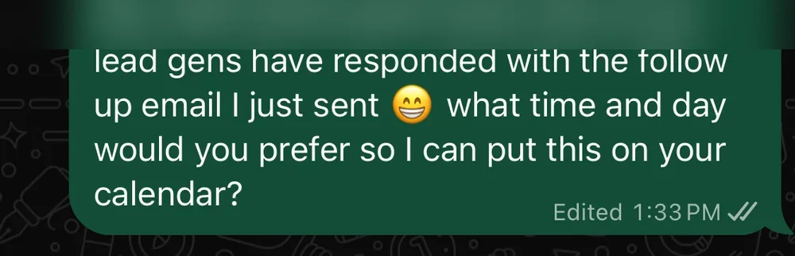
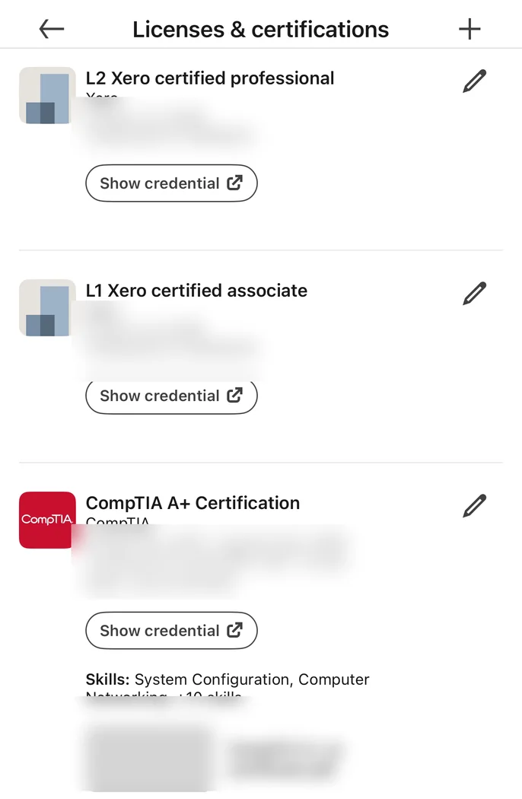

Recruitment Support
Candidate coordination, outreach, follow-up, resume formatting, profile preparation and recruiting workflow updates.
YOUR REMOTE OPERATIONS & ADMIN SUPPORT PARTNER
I'm Al Dionaldo, a Virtual Assistant and Administrative & Operations Specialist helping busy teams stay organized, keep follow-ups on track, maintain accurate systems and get everyday operational work done.
HOW I CAN HELP
I work best where accuracy, follow-through and organized communication matter.
Candidate coordination, outreach, follow-up, resume formatting, profile preparation and recruiting workflow updates.
Calendar coordination, documentation, client communication, file organization and dependable day-to-day follow-through.
Clean records, lead tracking, follow-up activity and organized workflows across CRM and business systems.
Spreadsheet systems, process organization, reporting, task tracking and practical workflow improvements.
Invoice preparation, record reconciliation, billing monitoring and accurate administrative finance support.
Canva assets, Meta Business Suite scheduling, content calendars and organized marketing administration.
SELECTED WORK
Client information and links shown in work samples have been intentionally redacted.
WORKFLOW & DATA MANAGEMENT
Restructured outreach tracking into a master Google Sheets workflow and organized a consistent follow-up process so contacts and next actions stayed visible.

CONTENT OPERATIONS
Prepared and staged social content inside Meta Business Suite, coordinated timing and gave the client a clear review path before publishing.

LEAD & CALENDAR COORDINATION
Handled lead-response follow-up, checked calendar availability, coordinated next steps and supported quick-turn collateral requests.

RECRUITMENT OPERATIONS
Maintain candidate records and recruiting workflows, prepare tailored outreach and follow-up communications, format resumes and professional profiles, and track open requirements across multiple priorities.
CLIENT FEEDBACK
“I can't tell you how much brain space you have freed up already!”
“Absolutely spot on Al, you're amazing!”
“Fantastic Al, you are a rockstar!”
SYSTEMS & TOOLS
EXPERIENCE
My background spans recruiting support, remote administration and high-volume operations in the U.S. and Philippines.
Recruiting workflows, candidate records, outreach, follow-up communication, resume/profile formatting and administrative tracking.
Executive calendars, CRM records, Xero billing support, client communication, documentation and marketing coordination.
Maintained high-volume operational records with 99.9% accuracy and supported compliance-focused operations requiring precision and confidentiality.
EDUCATION & CREDENTIALS

LET'S WORK TOGETHER
If you need help with recruiting operations, CRM upkeep, documentation, billing support or everyday administrative work, I'd be glad to discuss what your team needs.